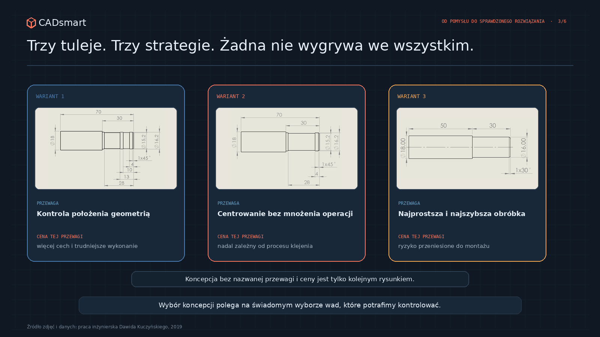

Jak wybierać rozwiązanie, kiedy każda koncepcja ma wady?
Wybór koncepcji nie polega na znalezieniu rozwiązania bez wad. Polega na świadomym wyborze wad, które potrafimy zrozumieć, kontrolować i zaakceptować.
Załóżmy, że mamy trzy rozwiązania dla tulei. Pierwsze ma średnice centrujące i dodatkowe podcięcia pod klej, więc wymaga więcej czasu na CNC. Drugie jest prostsze i tańsze. Trzecie jest najprostsze ze wszystkich. Które jest najlepsze?
Jeśli odpowiemy „najprostsze”, możemy przegrać na montażu i powtarzalności połączenia. Jeśli wybierzemy najbardziej rozbudowane, dołożymy operacje, koszt i miejsca, w których wykonanie może rozjechać się z modelem. Wariant pośrodku nie jest magicznie optymalny tylko dlatego, że stoi pośrodku tabeli. W prawdziwym projekcie prawie żadna koncepcja nie wygrywa we wszystkim.
Jedna jest lżejsza, druga łatwiejsza do wykonania, trzecia daje większy margines. Szczególnie ważna jest kontrola: bez niej nigdy nie będziemy wiedzieli, w którą stronę idziemy.
1. Każdy wariant jest odpowiedzią na inne pytanie
W pracy nad kompozytowym wahaczem przygotowałem trzy warianty aluminiowej tulei wklejanej w rurę z włókna węglowego. Wszystkie miały tę samą długość powierzchni klejonej, ale różniły się geometrią. Pierwszy wariant miał trzy średnice centrujące i dwa podcięcia na klej. Drugi wykorzystywał dwie średnice oraz jedno podcięcie. Trzeci miał stałą średnicę na całej długości i był najszybszy do wykonania.

Na pierwszy rzut oka porównujemy trzy kształty. W rzeczywistości każdy testuje inną filozofię: wariant rozbudowany stawia na kontrolę położenia i prowadzenie kleju kosztem trudniejszego wykonania; prosty na niski koszt i krótką obróbkę, ale przenosi odpowiedzialność na montaż; pośredni próbuje zachować centrowanie bez mnożenia cech geometrycznych.
Przed porównaniem warto dopisać do każdej koncepcji jedno zdanie: na czym polega jej przewaga i za co za nią płacimy? Jeśli nie potrafimy tego nazwać, prawdopodobnie mamy kilka rysunków, a nie kilka świadomie różnych strategii. Najpierw warto porównywać odmienne zasady działania, a wymiary dopracować dopiero po wyborze obiecującej zasady.
2. Najpierw bramki, dopiero później ranking
Macierze decyzyjne bywają pomocne, ale nie powinny punktami rekompensować warunku, którego nie wolno naruszyć. Jeżeli połączenie ma przenieść określone obciążenie, wariant niespełniający tego wymagania nie powinien wygrać dlatego, że jest tani i lekki. Rozwiązanie, którego nie da się zamontować w dostępnej przestrzeni, nie staje się „prawie dobre” po doliczeniu punktów za estetykę.
Najpierw są bramki: bezpieczeństwo, funkcja, obowiązkowe interfejsy, regulamin, dostępna technologia i maksymalny gabaryt. Wariant, który ich nie przechodzi, odpada albo wraca do zmiany. Dopiero wśród wariantów dopuszczalnych porównujemy masę, koszt, czas wykonania, łatwość montażu, serwis, liczbę operacji czy ryzyko dostaw.

W przypadku tulei nośność połączenia była wymaganiem. Prostota wykonania, masa i sposób rozprowadzenia kleju były kryteriami porównawczymi. Jeśli niewielka zmiana wagi kosztu zmienia zwycięzcę, tabela ujawniła remis zależny od preferencji — trzeba wrócić do priorytetów albo zaplanować test rozstrzygający. Oceny też potrzebują uzasadnienia: „łatwość montażu 8/10” bez obserwacji pozostaje opinią w kasku ochronnym.
3. Kryteria trzeba ustalić, zanim zobaczymy zwycięzcę
Wybór koncepcji łatwo ustawić pod wynik. Najpierw ktoś zakochuje się w jednym wariancie, a później odkrywamy, że akurat „elegancja geometrii” powinna dostać wagę dziesięć. Nie musi to wynikać ze złej woli: ludzie lepiej widzą zalety rozwiązania, nad którym spędzili więcej czasu.
Dla połączenia klejonego kryteria mogą obejmować nośność, centrowanie tulei, kontrolę warstwy kleju, odporność na błędy montażu, prostotę wykonania i kontroli, masę, gabaryt oraz możliwość powtarzalnego przygotowania części. Kryteria powinny opisywać cały sposób działania, nie tylko geometrię. Cena detalu nie jest pełnym kosztem: trzeba doliczyć przyrząd, ustawianie, kontrolę i ryzyko odrzutu. Warto również zapisać, dla jakiego etapu i wolumenu prowadzimy ocenę.
4. Niepewność jest osobnym kryterium
Dwa warianty mogą dostać podobny wynik, ale o jednym wiemy dużo, a o drugim prawie nic. Klasyczna tabela punktowa potrafi to ukryć. Wariant prosty może dobrze wypadać pod względem masy i wykonania, ale nie wiemy, czy podczas utwardzania utrzyma osiowość i stałą warstwę kleju. Bardziej złożony może ważyć kilka gramów więcej, ale ogranicza ruch elementów i wymusza położenie montażowe.
Badania tulei dobrze to pokazały. W najprostszym wariancie brak średnic centrujących pozwolił klejowi wypchnąć dwie tuleje z rur podczas wygrzewania. Próbki odrzucono przed próbą wytrzymałościową. Nie oznacza to, że prosty kształt zawsze jest zły — wynik zależał również od przygotowania powierzchni i kleju. Pokazał jednak, że usunięcie cechy geometrycznej przeniosło ryzyko do procesu.
Obok oceny warto więc zapisać poziom pewności: co wiemy z danych, co z obliczeń, co z doświadczenia, a co jest rozsądną hipotezą. Wysoka ocena oparta na niskiej pewności powinna uruchomić pytanie: jak najtaniej sprawdzić tę niewiadomą?
5. Najlepszy wariant to często ten, który warto sprawdzić jako następny
Na etapie koncepcji nie zawsze mamy dane potrzebne do ostatecznego wyboru. Zamiast wybierać od razu rozwiązanie „do produkcji”, można wybrać wariant do kolejnej iteracji.
- odrzucamy warianty niespełniające wymagań;
- porównujemy pozostałe według wcześniej ustalonych kryteriów;
- zaznaczamy niewiadome, które mogą zmienić ranking;
- projektujemy najtańszy dowód rozstrzygający najważniejszą z nich;
- po wyniku aktualizujemy decyzję.
To nie brak zdecydowania, lecz świadome kupowanie informacji przed zakupem narzędzi, części i problemów. W badanych tulejach wariant z dwiema średnicami centrującymi był prostszy od najbardziej rozbudowanego i dawał bardziej powtarzalne wyniki. Nadal nie spełnił wymaganej nośności, więc nie był „zwycięzcą projektu”, tylko najlepszym kandydatem do dalszego, poprawionego badania.
Wybieramy kompromis, nie ideał
Dobra decyzja koncepcyjna nie usuwa wad rozwiązania. Pokazuje, które z nich akceptujemy, dlaczego i jak zamierzamy je kontrolować. Najgroźniejszy nie jest wariant z wadami, ale taki, którego wad nie nazwaliśmy, bo za bardzo spodobały nam się jego zalety.
W kolejnym artykule pokażę, co w takim procesie naprawdę potwierdzają obliczenia, symulacja i test — oraz dlaczego żadne z tych narzędzi nie powinno samotnie ogłaszać zwycięstwa.
Sprawdź wybór koncepcji
Chcesz sprawdzić, czy zespół porównuje strategie, a nie tylko rysunki?
Rozwiń 9 pytań kontrolnych
- Czy każda koncepcja ma opisaną przewagę i cenę tej przewagi?
- Czy warianty różnią się zasadą działania, a nie tylko detalem wymiarowym?
- Czy wymagania obowiązkowe są oddzielone od kryteriów optymalizacji?
- Czy żaden wariant niespełniający bramki nie może wygrać rankingu?
- Czy kryteria i ich wagi ustalono przed poznaniem wyniku?
- Czy oceny mają dane, obserwacje lub doświadczenie jako uzasadnienie?
- Czy koszt obejmuje montaż, kontrolę, przyrząd i ryzyko odrzutu?
- Czy przy każdej ocenie zapisano poziom pewności?
- Czy największa niewiadoma ma najtańszy możliwy test rozstrzygający?
Chcesz zachować pytania na później?